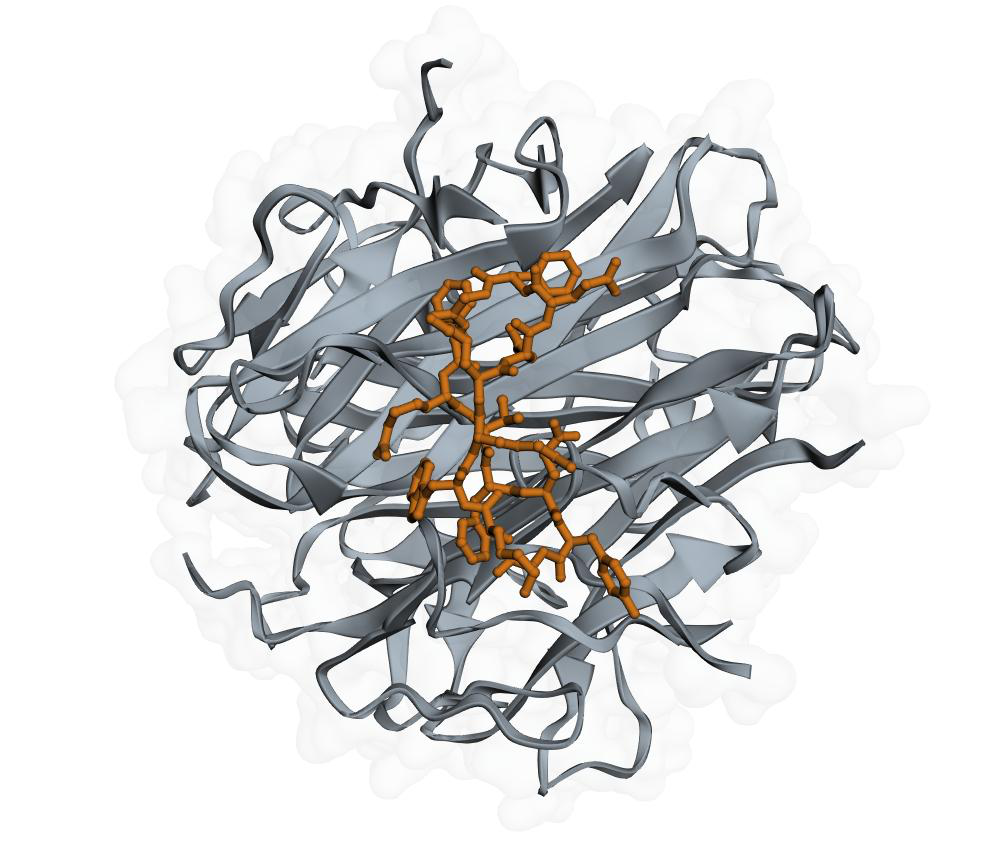
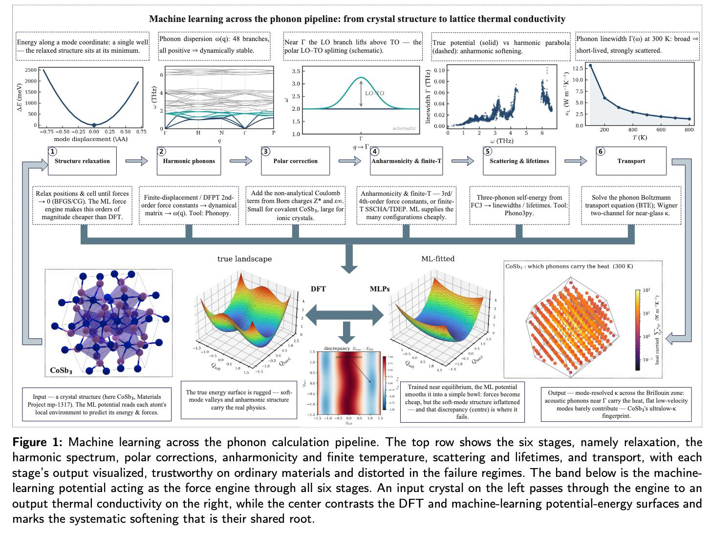
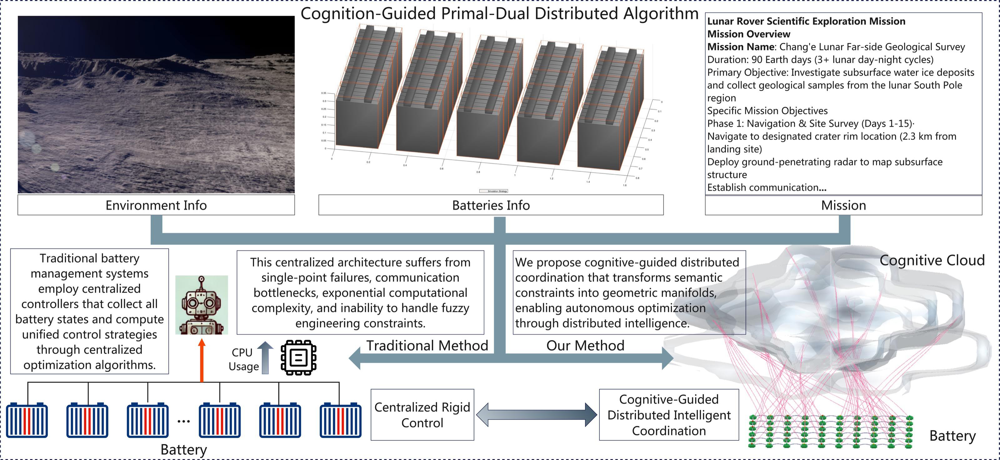
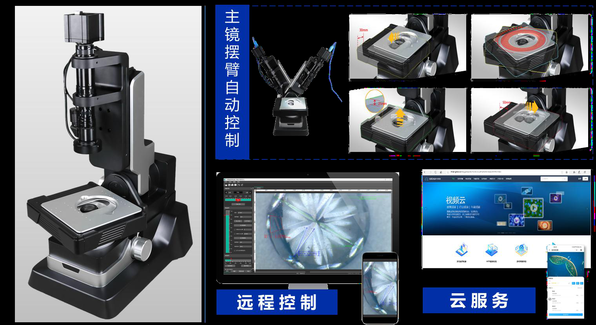

Virtual Cell Library ↗
Browse individual cells, explore gene expression and annotations, and export selected data.
Open Cell Explorer →AI FOR SCIENTIFIC DISCOVERY
Connecting scientific questions, computation and experiments.
An open space where interdisciplinary ideas become research practice.
Learning / Research / Incubation / Discovery

RESEARCH RESOURCES
Browse individual cells, explore gene expression and annotations, and export selected data.
Open Cell Explorer →Search antibody and nanobody records, inspect sequences and evidence, and build an exportable candidate shortlist.
Open Screening Workbench →01 / ABOUT THE PLATFORM
An open platform for undergraduate and graduate research, learning and innovation.
Bringing together computing, AI, life sciences, materials, chemistry and energy to advance data-driven discovery, practical learning and project development.
02 / RESEARCH DIRECTIONS
Shared capabilities for interdisciplinary learning,
research and innovation.
Protein and drug design, genomics, virtual cells and intelligent medicine.
Protein design / ADC / Peptides / TL1AMaterials property prediction, catalysis optimization, generative design and experimental validation.
Modeling / Formulation / Candidate selectionEnergy materials, battery thermal management, energy optimization and environmental simulation.
Multisource data / Physics integration / SimulationMachine vision, intelligent microscopy, instrument control and modular laboratory automation.
Edge AI / Modular instruments / Data feedback03 / SCIENCE IN PRACTICE
Selected research and applications from the platform presentation
A workflow spanning target definition, modeling, generation, screening and candidate delivery. A venom-target binder study compares four hotspot conditions and two inverse-folding model families.
Relative model performance changes with the hotspot environment. Computational design supports candidate prioritization; binding and function require experimental validation.

Exploring efficient candidate screening through phonon transport, lattice thermal conductivity prediction and dynamical stability assessment.
Machine learning accelerates calculations, with DFT, physical constraints and uncertainty assessment used to check reliability.

Connecting experimental measurements, state prediction and feedback control to study battery safety and coordinated management.
Temperature, voltage, current and flow measurements support risk and state prediction, PLC control and thermal management.

Intelligent microscopy, machine vision and modular workstations connect sensing, analysis, execution and experimental data.
The presentation identifies microscopy and modular automated workstations as existing capabilities. Intelligent peptide synthesis and gene-editing instruments are planned directions, with modular, standardized and phased development.
View courses and learning resources →
04 / LEARN · RESEARCH · CREATE
Online courses → Task assessment → Summer / winter programs
Connecting disciplinary learning and research through real projects.
Define the scientific question, available data and technical constraints.
Analyze data, train models, predict structures and evaluate multiple objectives.
Test ideas through simulation, intelligent instruments and specialist experiments.
Record results and exceptions to refine models and projects.
Course practice · Research training · Student innovation · Competitions · Entrepreneurship
Competitions such as iGEM support interdisciplinary teams, project training and international exchange.
05 / PEOPLE & PROGRESS
Faculty, postdoctoral researchers, doctoral students
and engineering researchers working together.
28 participants Summer on-site training
72 participants National Day online training
The presentation reports 26 manuscripts for July–September, including 17 under review / revision and 6 listed as Q1 Top. These categories are not a count of published papers.
Four book drafts cover AI education, AI drug discovery, AI and cell biology, and AI operational command. Teaching videos and reusable course resources are also being developed.
Team and progress figures reflect the platform presentation dated October 24, 2026.
06 / BUILD WHAT COMES NEXT
Connecting spaces and resources, courses and practice, projects and competitions,
incubation and showcases to support interdisciplinary learning and research.